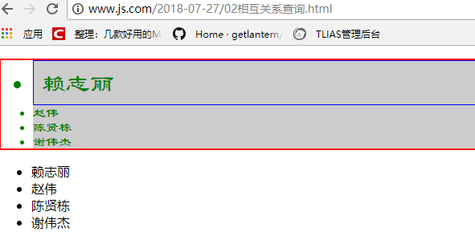
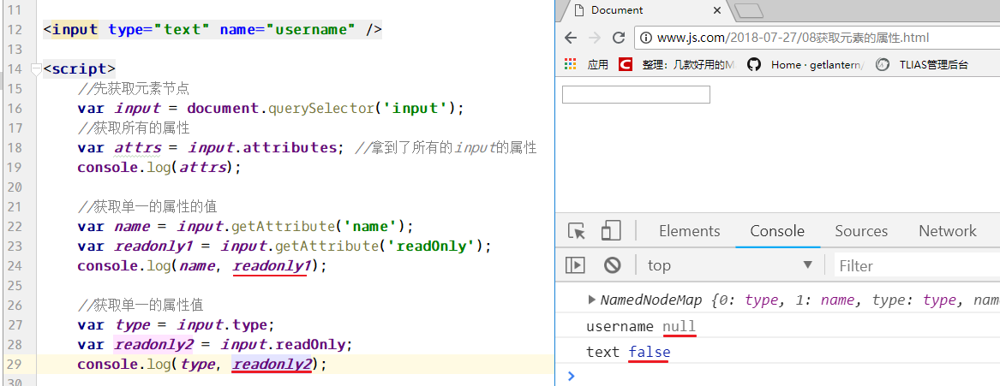
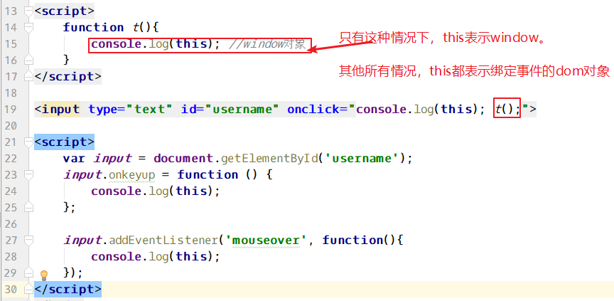

三、==DOM==（重点）
3.1、DOM介绍
3.1.1、什么是DOM
DOM全称是Document Object Model（文档对象模型），它是JS将HTML按文档结构和内容层次抽象出的模型，==使得JavaScript有了访问HTML的能力，能够实现对HTML中内容的操作==。DOM存在广泛，PHP以及其他语言也有各自的DOM模型。
3.1.2、节点与DOM模型
DOM模型呈现树状结构，因此也叫“树模型”，==树中的内容（标签、属性、文本）称为“节点”==，==节点在dom中就是对象==。包含有元素节点（标签）、属性节点、文本节点。dom模型中，每个节点，都是一个JavaScript对象。
根据 W3C 的 HTML DOM 标准，HTML 文档中的所有内容都是节点：
- 整个文档是一个文档节点，用document对象表示
- 每个 HTML 元素是元素节点，比如html、head、body、a、h1
- HTML 元素内的文本是文本节点
- 每个 HTML 属性是属性节点，比如href
- 注释是注释节点
3.1.3、节点之间的关系
节点之间的关系犹如人类家族中的族谱。节点之间的关系包括：
- 父子关系
- 兄弟（姐妹）关系

单词：
first：第一个last：最后一个Child：孩子（单数）Children：孩子（复数，很多孩子）parent：父亲Node：节点next：下一个previous：上一个Sibling：兄弟姐妹
3.2、元素节点==查询==操作
3.2.1、基于文档查询
文档是document，基于文档查询即调用document对象中的方法查询页面中的节点。
需要掌握的单词：
get：获取Element：一个元素Elements：多个元素By：根据….Tag：标签
下表所列方法都是document对象中的方法，调用方式为 document.getEle.....
| 方法名 | 返回值 | 支持 |
|---|---|---|
| ==getElementById(元素id)== | 一个dom对象 | 所有浏览器 |
| ==getElementsByTagName(标签名)== | 包含dom对象的数组 | 所有浏览器 |
| getElementsByClassName(类名) | 包含dom对象的数组 | IE8+ |
| getElementsByName(元素的name属性) | 包含dom对象的数组 | 所有浏览器 |
| ==querySelector(css选择器)== | 一个dom对象 | IE7+ |
| ==querySelectorAll(css选择器)== | 包含dom对象的数组 | IE7+ |
01元素节点查询.html 代码如下：
1 | <body> |
效果：

3.2.2、相互关系查询
相互关系查询可以分为下面三种情况：
- 根据父节点查找子节点
- 根据子节点查父节点
- 查询兄弟节点
具体属性/方法见下表：
| 方法/属性 | 说明 | 返回 | 支持 |
|---|---|---|---|
| 父节点.children | 查询所有子节点，非w3c标准(不包含空白) | 数组 | 所有浏览器 |
| 父节点.childNodes | 查询所有子节点，包括文本节点(包含空白) | 数组 | 所有浏览器 |
| 父节点.firstChild | 查询第一个子节点，包括文本节点 | 对象 | 所有浏览器 |
| 父节点.firstElementChild | 查询第一个子节点，不包括文本节点 | 对象 | IE8+ |
| 父节点.lastChild | 查询最后一个子节点，包括文本节点 | 对象 | 所有浏览器 |
| 父节点.lastElementChild | 查询最后一个子节点，不包括文本节点 | 对象 | IE8+ |
| 父节点.getElementBy….() | 节点继续调用getEle…系列方法查询子节点 | 数组/对象 | 所有浏览器 |
| 子节点.parentNode | 查询父节点 | 对象 | 所有浏览器 |
| 兄弟.previousSibling | 查询上一个兄弟，包括文本节点 | 对象 | 所有浏览器 |
| 兄弟.previousElementSibling | 查询上一个兄弟，不包括文本节点 | 对象 | IE8+ |
| 兄弟.nextSibling | 查询下一个兄弟，包括文本节点 | 对象 | 所有浏览器 |
| 兄弟.nextElementSibling | 查询下一个兄弟，不包括文本节点 | 对象 | IE8+ |
创建02相互关系查询.html ,代码如下：
1 | <body> |

3.2.3、遗留DOM
早期DOM访问形式，在一些特定元素的获取上比较方便。被保留下来使用，W3C标准化之后 称为“0级DOM”。
==document.body== 访问body节点 返回body节点
document.forms 访问所有的表单 返回数组
==document.formName[index].name== 访问表单项 返回单个表单项或数组
document.anchors 访问所有的锚点 返回数组
document.links 访问所有的链接 返回数组
document.images 访问所有的图片 返回数组
document.all 访问所有的元素 返回数组
03遗留DOM.html ，代码：
1 | <body> |
效果：
3.3、元素节点==增删改==操作
3.3.1、增加元素节点/创建节点
方法一：父节点.appendChild(子节点)
04添加新节点.html 代码：
1 | <body> |
预览效果：

方法二：父节点.insertBefore(新节点, 参照的节点);
04添加节点.html 代码
1 | <ul> |
效果：

3.3.2、克隆节点
05克隆节点.html:
3.3.3、修改节点
方法：父节点.replaceChild(新节点, 待替换的节点);
06替换节点.html 代码：
1 | <body> |
效果：
3.3.4、删除节点
方法：父节点.removeChild(子节点);
07删除节点.html 代码：
1 | <body> |
效果：（刘备被删除了）
3.4、属性节点操作
==属性肯定属于元素，所以对属性的任何操作都要先找到元素节点==。
3.4.1、获取元素的属性
元素节点.attributes 获取元素的所有属性
元素节点.getAttribute(属性名) 获取指定属性的值
元素节点.属性名 获取指定属性的值，用于获取元素不存在的属性的值比较准确
08获取元素的属性.html 代码：

3.4.2、添加/修改元素的属性
元素节点.setAttribute(属性名，属性值) 设置（==修改/添加==）一个属性值
元素节点.属性名 = 值 设置元素的属性
09添加、修改属性.html 代码：
1 | <body> |
效果图：
3.4.3、删除元素的属性
元素节点.removeAttribute(属性名) 删除一个属性
3.4.4、判断元素是否有哪个属性
elementNode.hasAttribute(属性名) 检测是否有某个属性，有返回true，没有返回false
见上图。
3.5、操作css样式
3.5.1、设置css样式
语法： elementNode.style.css样式 = 值
css样式的写法：
①、一个单词的直接写即可。比如color height …
②、样式名称带中横线的，去掉中横线，后面单词首字母大写。比如fontSize lineHeight backgroundColor
3.5.3、获取节点全部css样式
使用 “node.style.样式名称“ 的方式只能获取==行内样式和js已经设置过的样式==。
要想获取全部的样式，则必须使用下面的方法：
在IE中支持 node.currentStyle.样式名称
火狐支持 getComputedStyle(node).样式
13获取css样式.html
1 | <body> |
3.6、DOM属性（了解）
DOM属性指的是DOM对象的属性。
innerHTML
==获取/设置元素里的html内容==
innerText
==获取/设置元素里面的文本内容==
获取节点里面的内容：

设置节点里面的内容：
==无论调用innerHTML还是innerText，给元素设置内容的时候，都会覆盖原来的内容==。
nodeName
nodeName 是只读的
元素节点的 nodeName 与标签名相同
属性节点的 nodeName 与属性名相同
文本节点的 nodeName 始终是 #text
文档节点的 nodeName 始终是 #document
nodeValue
元素节点的 nodeValue 是 undefined 或 null
==文本节点的 nodeValue 是文本本身==
属性节点的 nodeValue 是属性值
nodeType：调用nodeType属性会得到一个数字，这个数字表示节点的类型
==元素 1==
属性 2
==文本 3==
注释 8
文档 9
3.7、DOM获取元素位置（了解）
offsetLeft 元素在网页中水平坐标值
offsetTop 元素在网页中垂直坐标值
offsetWidth 元素在页面中占据的宽度
offsetHeight 元素在页面中占据的高度
01元素在页面中的位置.html 代码：
1 | <body> |
scrollLeft 滚动条在容器中水平滚动的距离，多用于浏览器的滚动条
scrollTop 滚动条在容器中垂直滚动的距离，多用于浏览器的滚动条
1 | <!--设置body比较宽，比较高，才会有滚动条--> |
四、==事件绑定==（重点）
4.1、何为事件
浏览网页时，当我们做出点击鼠标、按键盘、移动鼠标等行为时，这些行为会被浏览器内置的JavaScript引擎所捕获，并执行对应的某些操作（函数）。==那么你的行为（动作）+ JavaScript引擎捕获 + 执行对应的操作 = 事件。==
所以，一个完整的事件应该包括：
- 用户行为；
- 浏览器捕获你的行为；
- 执行对应的操作（函数）
常见行为有：鼠标点击、鼠标的移动、鼠标的移入和移出、键盘控制等等。
事件的作用是：通过事件，我们（浏览网页的人）就可以和浏览器进行一些交互了。
4.2、==事件绑定与移除==
事件绑定就是添加事件，那么为谁添加事件呢？可以为页面中的所有标签（元素、节点）添加事件，大到整个文档（document），小到其中一个标签都可以添加事件。
在为一个节点添加事件的时候，有三种方式：
- 直接在标签中添加，即使用onclick、onmouseover等HTML属性；
- DOM的方式添加，即通过dom方法获取节点，然后为其绑定事件；
- 使用addEventListener或attachEvent（IE8及更低版本浏览器）。
为一个标签添加事件之后，还可以删除这个事件。
下面分别来学习这三种添加事件的方式：
4.2.1、直接在标签中添加
利用HTML标签的==on….==属性，为该标签添加事件。
15事件绑定.html
1 | <input type="button" value="点我" onclick="alert('啊');" /> |
如果说，点击的时候，要执行很多行js代码，可以封装一个函数，点击的时候，调用函数。
1 | <input type="button" value="点我" onclick="t();" /> |
4.2.2、DOM方式添加
HTML代码中，没有任何的js代码。用dom的方式，获取标签，然后为其绑定事件：
15事件绑定.html
1 | <input type="text" id="username" /> |
问题？如果为一个节点，用上面两种方式都绑定了同一个事件，那么执行哪个事件？
答：只执行DOM方式添加的事件。
==删除事件，直接设置事件处理程序为null==。
1 | input.onkeyup = null; //移除了事件，适用与行内绑定的事件和用DOM方式绑定的事件 |
4.2.3、使用addEventListener或attachEvent方法添加
IE浏览器中用attachEvent；
火狐浏览器用addEventListener；
==事件监听函数的优点是可以为一个节点添加多个同类型的事件==。
16事件监听.html 代码：
1 | <input type="text" id="username" /> |
通过事件监听方法添加的事件，也可以被移除，移除的方法是：removeEventListener和detachEvent
==注意： detachEvent 有些写法多了个 t，如dettachEvent，但IE某些版本中会报错。==
16事件监听.html
1 | //移除事件兼容函数 |
4.3、事件中this指向
这节学习事件中，如果出现this，那么this表示什么？

4.4、常用事件
- 页面事件：
- onload ：当页面载入完毕（页面中的标签和外部资源）后触发
- 焦点事件
- onfocus ：当获取焦点时触发
- onblur ：当失去焦点时触发
- 鼠标事件
- onmouseover ：当鼠标悬浮时触发
- onmouseout ：当鼠标离开时触发
- 键盘事件
- onkeypress ：当键盘按下时触发（如果按住某个键不松开，会一直触发press事件）
- onkeydown ：当键盘按下时触发
- onkeyup ：当键盘弹起时触发
- 其他事件：
- onchange ：内容改变时会触发，常用于select>option。
- onsubmit ：表单提交时触发，这个事件要给form绑定而不是给提交按钮绑定
- onresize ： 页面窗口改变大小时会触发
- onscroll ：滚动条滚动时触发
- onprogress ：进度事件，用于上传文件的进度
五、==事件对象==（重点）
5.1、什么是事件对象
事件被触发以后，系统会生成一个对象，这个对象就是事件对象。
==事件对象中提供了很多属性，这些属性能够表示当前的事件的特点或特征==。
浏览器原生提供一个Event对象，所有的事件都是这个对象的实例，或者说继承了Event.prototype对象。
单词event就是事件的意思，在JavaScript中，它表示事件对象
5.2、如何得到事件对象
不同浏览器得到事件对象的方式不同：
- 低版本IE ：在事件处理函数中，直接用
window.event;就可以得到事件对象; - 火狐/谷歌：需要给事件处理函数加入一个形参，这个参数就是事件对象。
1 | <script> |
运行代码后，在输入框中输入任何内容，会输出按键对应的keyCode值。
5.3、事件对象常用属性
事件对象也是对象，而且是内置的对象，事件对象中默认带有很多属性和方法。需要了解的是，不同的事件，事件对象中的成员有所差异。
下面列举一些事件对象中的常用属性：
==keyCode：表示键盘上的键对应的数值==。
key：表示按键（是一个实际的符号）
altKey：表示是否按了alt键，按了结果为true，没按结果为false（组合按键的时候，才会有作用）
shiftKey：表示是否按了shift键，按了结果为true，没按结果为false（组合按键的时候，才会有作用）
ctrlKey：表示是否按了ctrl键，按了结果为true，没按结果为false（组合按键的时候，才会有作用）
pageX: 鼠标距离页面左边的距离
pageY: 鼠标距离页面上面的距离
screenX: 鼠标距离屏幕左边的距离
screenY: 鼠标距离屏幕上面的距离